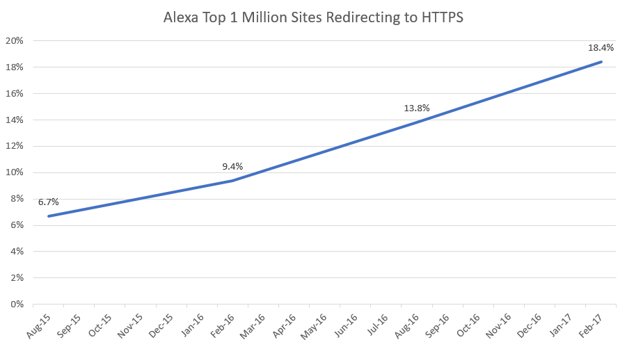
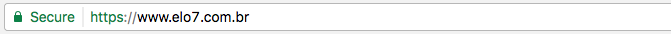
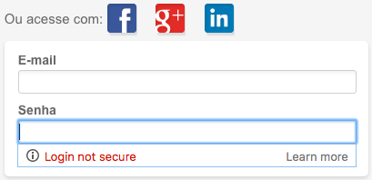
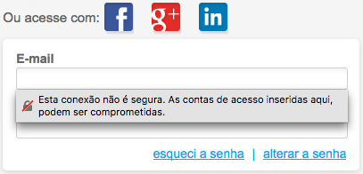
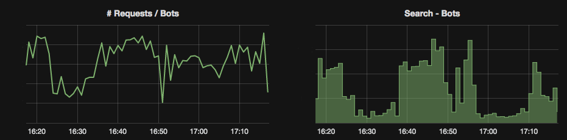

Migrando para HTTPS
Publicado em:
@edsonmarquezani
Como vocês já devem ter notado, recentemente o Elo7 passou a ser servido unicamente em HTTPS. Nenhuma parte de nosso conteúdo ou navegação está mais disponível em HTTP plano. Isso segue uma tendência de toda a Internet e cada vez mais sites devem adotar esse "formato". O gráfico abaixo (extraído daqui) mostra o crescimento do uso de HTTPS entre o 1 milhão de sites mais acessados listados pela Alexa.

Essa mudança, que pode parecer simples à primeira vista, tem uma série de motivos e também implicações, que serão discutidas a seguir.
HTTP versus HTTPS
O protocolo HTTPS é a versão segura do protocolo HTTP. Com ele, todos os dados trafegados são criptografados por outro protocolo chamado SSL/TLS. O SSL é baseado em técnicas de criptografia simétrica (onde uma única chave é usada) e assimétrica (onde existem chaves separadas para criptografar e descriptografar). Por "debaixo" do SSL, permanece o mesmo HTTP de sempre, como conhecemos.
O objetivo primário do HTTPS é, como pode ser facilmente deduzido, prover privacidade na comunicação, impedindo que o teor dos dados seja revelado em caso de interceptação por terceiros. Isso é não apenas desejável, mas indispensável para operações que transmitem dados sensíveis, como senhas, dados bancários, mensagens, etc. É por isso que operações de login, pagamentos online e até mesmo troca de mensagens (por aplicativos ou e-mails) sempre são realizadas dessa forma.
Outra vantagem do HTTPS é a comprovação de identidade, ou seja, poder ter certeza de que um site não é falso e que realmente pertence à entidade que diz pertencer. Isso é possível pois, na web, todo certificado SSL utilizado é assinado por uma Autoridade Certificadora (CA), garantindo sua autenticidade. O certificado nada mais é do que a chave pública usada na porção do protocolo onde se utiliza criptografia assimétrica. (A compreensão plena de todo o mecanismo de funcionamento do protocolo SSL e, em especial, das técnicas de criptografia foge ao escopo desse artigo, por tratar-se de um tópico bastante extenso e complexo.) Essa chave (ou certificado) contém o próprio endereço do site, entre outras informações da entidade à qual pertence. Quando o navegador obtém esse certificado do site, pode validar se ele foi realmente emitido por uma CA confiável, confirmando se o site é autêntico. (O mecanismo de validação envolve um outro conjunto de certificados das CAs que vêm junto dos navegadores.) Em um cenário onde alguém tentasse usar um certificado falso, essa validação falharia, expondo a fraude, e a barra de endereço não seria exibida com o cadeado verde abaixo.

Essa garantia de autenticidade é fundamental para sites que contém informações hiper sensíveis dos usuários, como entidades finaceiras, serviços de email, entre outros, evitando que se caia em golpes (phishing).
Uma das desvantagens do HTTPS em relação ao HTTP é o custo computacional maior para cliente e servidor, devido à série de cálculos que é necessário realizar para criptografar e descriptografar os dados. Entretanto, para o hardware que temos nos dias de hoje, esse overhead costuma ser desprezível perto da complexidade das aplicações em si, impactando muito pouco na carga do servidores ou tempo de resposta. Assim como para os desktops, cujos CPUs ficam ociosos boa parte do tempo.
Outra desvantagem é o custo: em geral, as autoridades certificadoras cobram pela emissão dos certificados. Entretanto, atualmente já existem serviços gratuitos como o Let's Encrypt, e até mesmo o AWS Certificate Manager, que oferece gratuitamente certificados, desde que usados em conjunto de outros recursos AWS (como Elastic Load Balancer e CloudFront).
Snowden, HTTP2, Google e navegadores
É bem verdade que o HTTPS é fundamental para operações que envolvem dados mais sensíveis, mas e quanto à navegação mais corriqueira, como leitura de conteúdo, visualização de produtos, pesquisas, etc? Por que utilizá-lo nesses casos?
Bem, o mundo pós-Snowden encara essa questão de forma diferente. Hoje, é de conhecimento público que diversos governos de nações espionam a comunicação de cidadãos, empresas e até mesmo de outros governos. Em decorrência disso, a preocupação com a privacidade levou a comunidade técnica a um consenso de que a criptografia deixou de ser uma opção, para se tornar uma necessidade, razão pela qual a adoção do HTTPS tem sido não apenas incentivada, mas também de certa forma forçada pelas grandes empresas do setor e grupos que atuam na definição de padrões e regulação da Internet. Desde 2014 o Google vem favorecendo páginas em HTTPS com um pequeno ganho de ranking (SEO), como forma de incentivo à sua adoção.
Portanto, a pergunta que se fazia antes - "por que usar HTTPS?" - foi invertida para: "por que não usar HTTPS?"
De fato, para a nova versão do protocolo HTTP, o HTTP/2, os navegadores nem sequer dão mais suporte à versão não SSL. Ou seja, na prática, pra poder usar os recursos da versão mais nova do HTTP, é obrigatório o uso de HTTPS. E não para por aí. Navegadores como o Chrome, por exemplo, já tem há um bom tempo em seus planos classificar explicitamente páginas HTTP como não seguras. Futuramente, toda página HTTP deve ser exibida como abaixo (atualmente isso é só exibido quando habilitada uma flag específica na configuração):
A partir da versão 56, o Chrome Canary (uma versão com os recursos mais recentes do navegador) já exibe por padrão avisos para formulários de senhas ou cartões de crédito em páginas não HTTPS.

Analogamente, a versão de desenvolvimento do Firefox também alerta o usuário de forma bastante explícita.

Todos os outros navegadores também apontam na mesma direção - a migração total para HTTPS parece ser uma realidade inevitável.
Assets e outros elementos da página
Para que uma página seja considerada segura, não apenas a página em si precisa ser servida em HTTPS, mas também todos os seus recursos (imagens, arquivos CSS e Javascript, etc). Assim como não pode haver chamadas de métodos Ajax para serviços não HTTPS. Isso vale, inclusive, para websockets e pixels ocultos. Portanto, um dos desafios da migração para HTTPS é garantir que todo esse conteúdo também esteja disponível em HTTPS. Do contrário, os navegadores exibirão um ícone de info no lugar do cadeado verde.
301 ou 302?
Toda migração precisa ser amigável para os usuários, portanto, um requisito fundamental desse tipo de mudança é que todos os links HTTP sejam redirecionados para sua versão em HTTPS, o que, na maior parte das vezes, demanda apenas a troca do protocolo na URL. Isso pode ser realizado a partir de uma configuração muito simples em qualquer webserver de mercado (Nginx, Apache), como no exemplo abaixo para Nginx.
# Trecho de configuração que deve ir no server HTTP (porta 80)
location / {
return 302 https://${http_host}${request_uri};
}
Um ponto de atenção importante é com relação ao tipo de redirect retornado. O protocolo HTTP suporta, entre outros, dois tipos principais e mais usados de redirect:
- Redirect Permanente - código 301: como diz o próprio nome, é permanente, portanto, uma vez recebido para aquela URL, o servidor só volta a ser consultado após limpeza do cache do navegador;
- Redirect Temporário - código 302: basicamente o oposto do caso anterior, não deve ser cacheado pelo navegador, exceto se indicado pelo servidor, e garante que requisições subsequentes sejam feitas no endereço original.
Como pode ser facilmente concluído, o mais seguro para esse tipo de migração é o redirect temporário (302, como no exemplo acima), uma vez que sempre há a possibilidade de ter que reverter as mudanças realizadas.
Entretanto, após a constatação de que tudo correu bem e de que não há mais grandes chances de precisar reverter as mudanças, o ideal é alterar o retorno para 301, pois esse é o código de retorno mais adequado e bem interpretado de forma geral, além do fato de poupar requisições e não perder throughput de bots.
Page ranking e Bots
Bots (ou robôs) são agentes automatizados dos mecanismos de busca (Google, Bing, Baidu) que navegam pelos sites e indexam seu conteúdo. Os usuários que vêm por meio desses mecanismos de busca são parte fundamental da audiência da maioria dos sites, incluindo e-commerces como o Elo7. Portanto, os bots devem ser tratados com muito cuidado. Aqui no Elo7, nós acompanhamos de perto a atividade deles em nosso site por meio de diversas métricas, como abaixo.

Até o presente momento, o Google garante que não há perda de pontuação de ranking para as páginas redirecionadas de HTTP para HTTPS. Entretanto, não são todos os bots que seguem redirects, como ficou evidente mais tarde para nós. Assim que migramos nosso site, vimos uma queda brusca nesse gráfico da esquerda, indicando uma redução grande na quantidade de acesso de bots. Mais tarde, ficou claro que o problema era o bot do Bing, que não seguia redirects e, portanto, parou de navegar pelo nosso conteúdo.
Sitemaps e Webmaster Tools
Consequências inesperadas como essa - o sumiço dos bots - podem ocorrer, mas há como contorná-las e, de preferência, evitá-las.
Algo muito importante para a indexação de qualquer site são os índices conhecidos como Sitemaps, que orientam a navegação inicial dos bots e permitem configurar alguns de seus comportamentos (por exemplo, desligar a indexação de parte das URLs, listar endereços que não estão linkados em outras páginas, entre outras coisas), além de identificar de forma mais exata o tipo de conteúdo. Uma vez que o site seja migrado totalmente para HTTPS, é muito importante que as URLs listadas nos arquivos de sitemaps também sejam alteradas.
Outra ferramenta muito útil são as chamadas Webmaster Tools, painéis de controle oferecidos pelos indexadores, como Google e Bing, onde é possível visualizar e administrar a indexação das páginas. Através dele é possível adicionar, por exemplo, o endereço inicial do site em HTTPS para que seja indexado paralelamente, mesmo antes da migração definitiva, o que pode ser bastante útil para evitar maiores consequências no ranking.
E, por final, não se desespere. É natural uma mudança de comportamento dos bots após esse tipo de migração, e tomadas todas as precauções necessárias, muitas já mencionadas, é necessário aguardar até alguns dias para que eles voltem ao normal. Além disso, é importante ficar atento, pois é possível que o site todo seja reindexado após essa mudança, aumentando significativamente a carga.
Conclusão
A migração para HTTPS é inevitável e terá que ser feita por todos, mais cedo ou mais tarde. Quanto antes possa ser feita, melhor. Não se trata de algo complexo, mas, especialmente para sistemas grandes, pode haver um certo nível de esforço, sendo importante levar em consideração os pontos mencionados. Entretanto, tomados os devidos cuidados e sendo bem planejado, é plenamente possível de ser realizado sem qualquer indisponibilidade.
Dúvidas? Contribuições? Deixe um comentário!